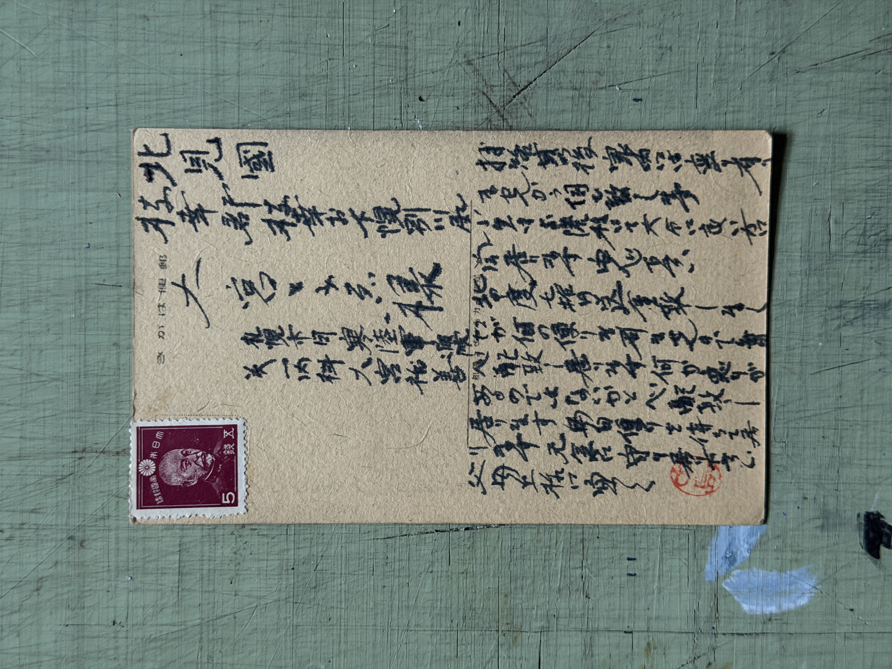

01 / 23

Personal
Showa Era
To Gunma Prefecture
Letter
群馬縣太田市 大橋義雄 様
拝啓
御無沙汰致シテオリマスガ、皆様ニハ御變リナク御過ゴシノコトト存ジマス。
先日ハ大變御世話ニナリ有難ウ御座イマシタ。季節ノ變リ目デスノデ御身體ヲ御大事ニシテ下サイ。又近イウチニ御會イ出來ルコトヲ樂シミニシテオリマス。
敬具
拝啓
御無沙汰致シテオリマスガ、皆様ニハ御變リナク御過ゴシノコトト存ジマス。
先日ハ大變御世話ニナリ有難ウ御座イマシタ。季節ノ變リ目デスノデ御身體ヲ御大事ニシテ下サイ。又近イウチニ御會イ出來ルコトヲ樂シミニシテオリマス。
敬具
To: Mr. Ohashi Yoshio, Ota City, Gunma
"Dear Sir,
I apologize for my silence, but I trust everyone is well.
Thank you for your hospitality the other day. As we are at the change of seasons, please take care. I look forward to seeing you again soon.
Respectfully yours"
"Dear Sir,
I apologize for my silence, but I trust everyone is well.
Thank you for your hospitality the other day. As we are at the change of seasons, please take care. I look forward to seeing you again soon.
Respectfully yours"
Note: A warm letter to Gunma Prefecture expressing gratitude for hospitality. Ota City was known for its aircraft manufacturing industry during this era.